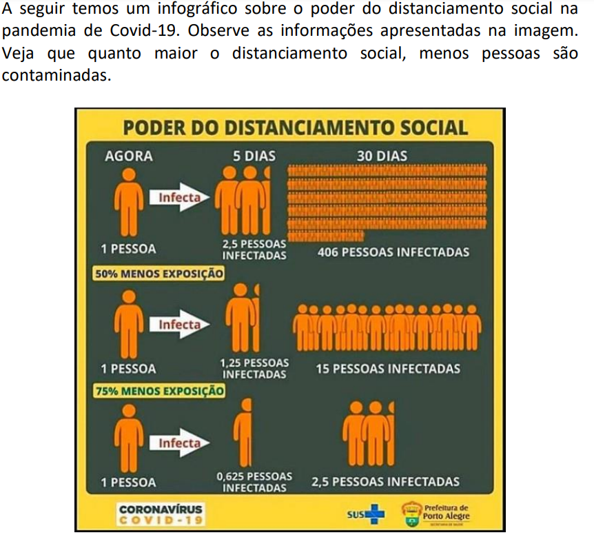

O conteúdo das funções Afim eu entendia quando a professora falava, e quando passava as atividades eu tinha e ainda tenho um pouco de problema de compreender as questões, mas na prova eu tive dificuldades, pois não lembrava muito como fazer, mas no demais eu fui bem com esse conteúdo, acredito eu.
A questão da função constante eu não lembrava, vi os PDF's da professora agora e não sei como resolver se me pedissem para fazer.
A parte das funções quadráticas eu poderia dizer o mesmo, tive bastante dificuldade na prova também, por falta de compreensão das questões e etc. A parte das parábulas eu entendi bem, não sabia ou pelo menos nem lembrava da palavra "parábula", e achei fácil essa parte.
A fórmula de bhaskara eu confesso ter um pouco de dificuldade para lembrar, não sabendo o porquê, pois eu era MUITO bom com bhaskara, e parece que desaprendi a usar.
Aparte de funções exponenciais eu entendi os exemplos que a professora passou, por exemplo este:
Enfim, essa parte de exponencial foi a função que eu mais entendi, se não me engano. Por mais que eu tenha dificuldades para compreender o que a pergunta diz, foi a que eu mais entendi.
Vamos para a última e pior parte kkk, logaritmos eu tinha entendido de início, com o exemplo do log2 8 = 3, e fui entendendo, até que uma hora eu não entendia mais nada. A professora deu exercícios na última aula, no final, e eu não conseguia fazer da Núm. 1 letra B.
Voltar